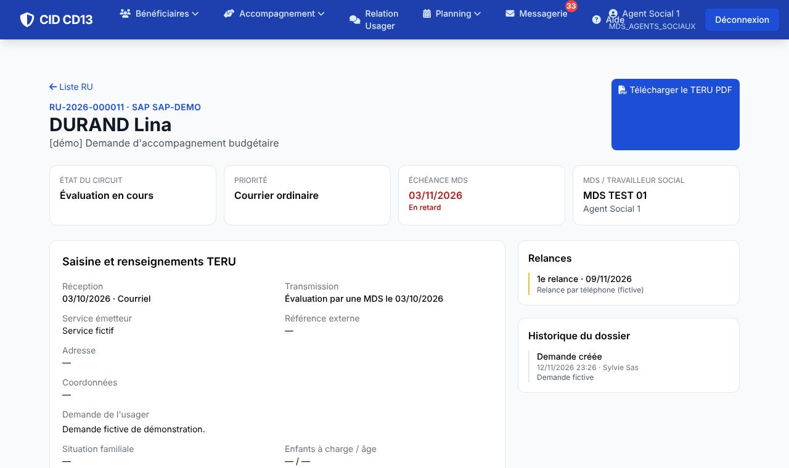
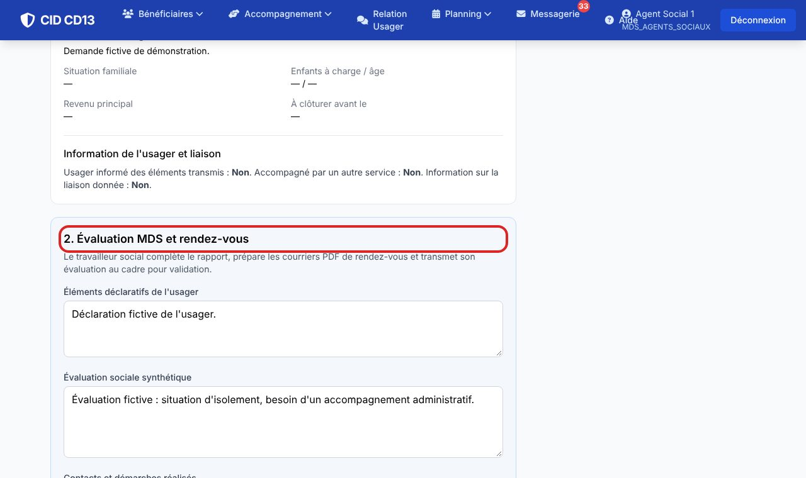
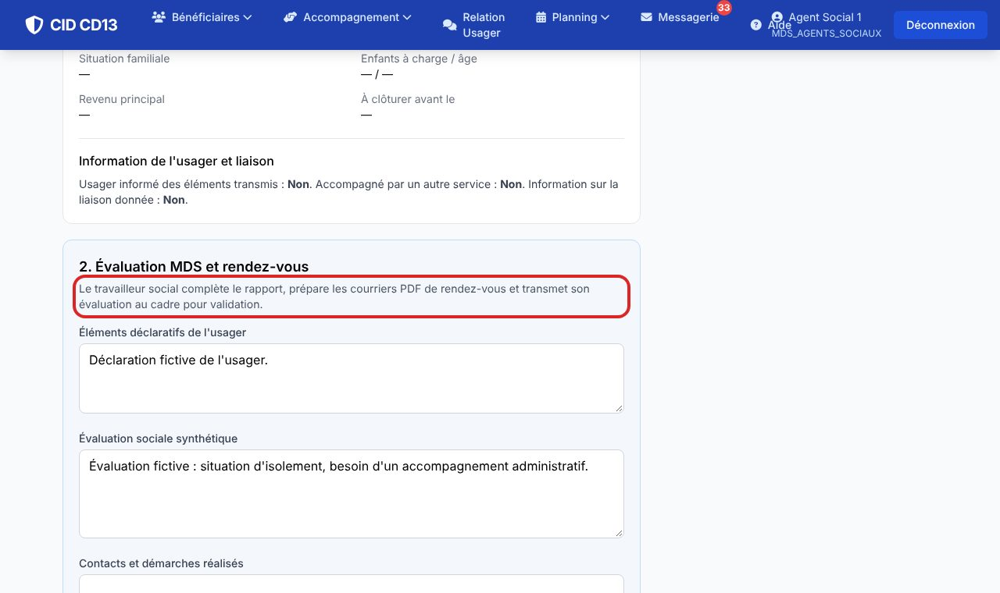
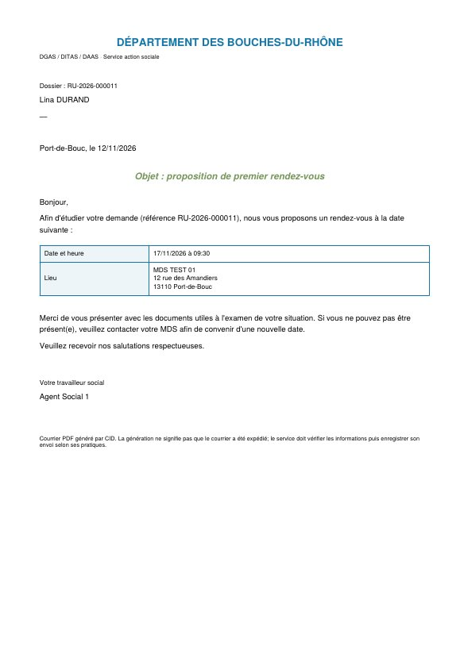

Avant de commencer
- Vous ne voyez une demande que lorsqu'elle a été transmise à votre MDS, et vous ne la modifiez que si elle vous est affectée.
1Lire la demande

- Le haut de la fiche rappelle la référence, l'échéance et l'état du circuit.
- La saisine (demande de l'usager, renseignements TERU) reste en lecture seule à cette étape.
2Rédiger l'évaluation

- Renseignez les éléments déclaratifs de l'usager, l'évaluation sociale, les contacts et démarches, la situation actualisée, la problématique et le plan.
- Ajoutez le plan d'aide et, si une aide financière est proposée, son dispositif, sa décision et son montant.
- Cliquez sur Enregistrer autant de fois que nécessaire : le texte est gardé, sans transmission.
3Fixer les rendez-vous et préparer les convocations


- Saisissez la date et l'heure du 1er rendez-vous. Si l'usager ne s'y présente pas, cochez l'absence : la date du 2e rendez-vous devient alors obligatoire.
- Générer le 1er courrier PDF produit la convocation. La génération est tracée, mais l'envoi reste à faire par le service.
Le 2e courrier n'est proposé qu'après une absence au 1er rendez-vous.
4Transmettre au cadre
- Le bouton Transmettre au cadre pour validation n'apparaît que lorsque l'évaluation est complète. Les champs manquants sont indiqués.
- Le cadre reçoit un message interne, et le dossier passe dans sa file de validation.
Après transmission, seul le cadre peut encore corriger l'évaluation, et seulement avant son visa.
Bon à savoir
- Seul le cadre peut affecter une demande ou la valider : vous transmettez l'évaluation, le cadre la signe.
Et ensuite ?
Cliquez sur une image pour l'agrandir. Le cadre rouge montre où cliquer ou quoi remplir. Toutes les données affichées sont fictives.